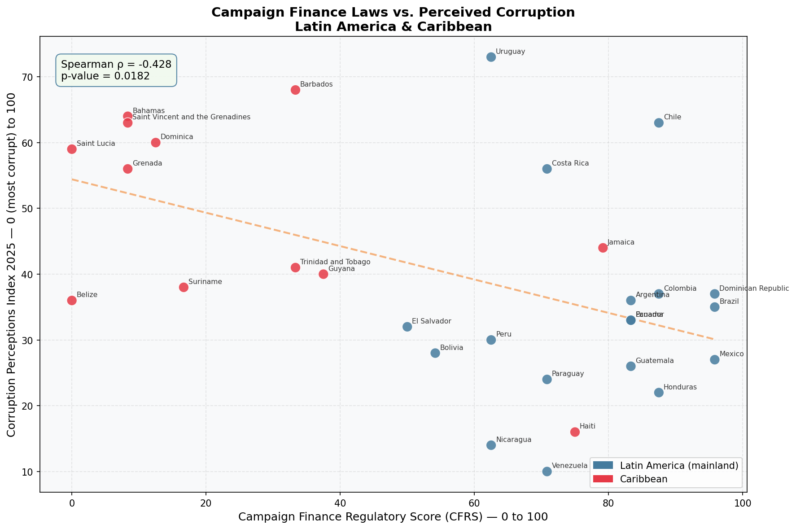

An original index scoring illicit campaign financing laws across 32 Latin American & Caribbean countries — and testing whether stronger laws translate to less perceived corruption.
Countries with more campaign finance laws tend to score lower on the Corruption Perceptions Index — a statistically significant finding that points to reactive legislation as the key driver.
Using the International IDEA Political Finance Database — the world's leading resource on money in politics — we coded each country's legal framework across 12 variables, grouped into 4 pillars. Each variable scores 0 (no law), 0.5 (partial), or 1 (full), producing a final score from 0 to 100.
Each dot is a country. The horizontal axis shows how strong its campaign finance laws are. The vertical axis shows how clean it is perceived to be (higher = less corrupt). The dashed line is the trend.

What this means: Countries that score higher on campaign finance regulation tend to score lower on the CPI — meaning they're perceived as more corrupt, not less. This isn't a flaw in the data. It reflects a real phenomenon: countries with severe corruption problems are more likely to have passed reform laws in response to public and international pressure. The laws exist — but perceived corruption remains high because enforcement is weak or the problem runs deeper than campaign finance alone.
Notable exceptions: Chile and Uruguay both score well on laws and on perceived cleanliness — suggesting that when strong laws are paired with institutional strength, the combination works. The Caribbean cluster (red dots, top-left) shows the opposite dynamic: minimal regulation but relatively clean perception, likely reflecting simpler political economies.
All 32 countries ranked by their Campaign Finance Regulatory Score (0–100).